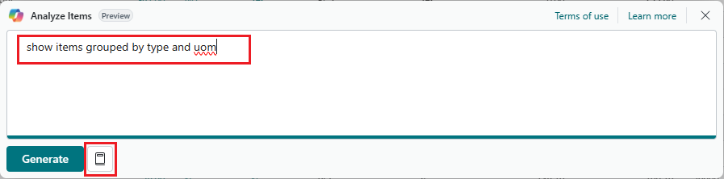

Daten in Listen mithilfe von Copilot analysieren (Vorschauversion)
[!INCLUDE [preview-banner](~/../shared-content/shared/preview-includes/preview-banner.md)]In diesem Artikel wird beschrieben, wie Sie mit der Analyseunterstützung Daten auf Listenseiten analysieren können.
[!INCLUDE [preview-note](~/../shared-content/shared/preview-includes/production-ready-preview-dynamics365.md)]Über die Analyseunterstützung
Die Analyseunterstützung ist ein Copilot für den Analysemodus auf Listenseiten in Business Central. Der Analysemodus bietet eine interaktive und vielseitige Möglichkeit, Daten zu berechnen, zusammenzufassen und zu untersuchen. Um Daten im Analysemodus zu analysieren, erstellen Sie eine Analyse-Registerkarte, auf der Sie die Daten transformieren, sodass die gewünschten Aggregationen und Zusammenfassungen angezeigt werden. Sie ordnen beispielsweise Felder in Zeilen und Spalten an, legen Filter fest, sortieren Spalten und pivotieren Felder. Mit der Analyseunterstützung brauchen Sie diese Aufgabe nicht mehr manuell zu erledigen, sondern erreichen mit Worten fast dasselbe – oder können wenigstens einen entsprechenden Anfang machen. Indem Sie die gewünschte Struktur in natürlicher Sprache ausdrücken, etwa „nach Menge von klein nach groß sortieren“ oder „Durchschnittskosten pro Kategorie anzeigen“, generiert die Analyseunterstützung mithilfe künstlicher Intelligenz einen Layoutvorschlag auf einer Analyseregisterkarte.
Verfügbare Sprachen
Diese Copilot-Funktion wurde validiert und wird nur auf Englisch unterstützt. Obwohl sie in anderen Sprachen verwendet werden kann, funktioniert sie möglicherweise nicht wie vorgesehen. Die Sprachqualität kann je nach Benutzerinteraktion oder Systemeinstellungen variieren, was sich auf die Genauigkeit und der Benutzererfahrung auswirken kann.
Voraussetzungen
- Die Analyseunterstützungsfunktion ist aktiviert und Sie haben die Berechtigung, sie zu verwenden. Diese Aufgabe wird normalerweise durch einen Administrierenden erledigt. Erfahren Sie mehr über das Konfigurieren von Copilot- und KI-Funktionen.
Erste Schritte
Öffnen Sie die Listenseite, die Sie analysieren möchten.
Um beispielsweise mit der Seite Artikel zu arbeiten, wählen Sie das Symbol
 aus (Alt+Q), geben Sie Artikel ein und wählen Sie dann den zugehörigen Link.
aus (Alt+Q), geben Sie Artikel ein und wählen Sie dann den zugehörigen Link.Sie können die Datenanalyse mit Copilot direkt von der Listenseite aus starten oder indem Sie zunächst in den Analysemodus wechseln. Verwenden Sie für den Einstieg einen der folgenden Schritte:
- Wählen Sie in der Aktionsleiste oben auf der Seite Copilot > Liste analysieren aus.
- Wählen Sie in der Aktionsleiste oben auf der Seite In den Analysemodus wechseln und wählen Sie dann Copilot > Neue Analyse erstellen.
Geben Sie im Fenster zum Artikel analysieren mit Copilot eine Beschreibung des gewünschten Layouts ein. Diese Beschreibung wird als Prompt bezeichnet.

Tipp
Wenn Sie Hilfe zum Schreiben eines Prompts brauchen, wählen Sie
 Anleitung für Prompts und wählen Sie eine der Optionen aus, um zu beginnen. Der Text in Klammern
Anleitung für Prompts und wählen Sie eine der Optionen aus, um zu beginnen. Der Text in Klammern [ ]ist nur ein Beispiel und nicht im Copilot-Fenster enthalten.Wählen Sie Generieren und warten Sie dann, während der Copilot das Layout auf der neuen Analyseregisterkarte generiert.
Überprüfen Sie die Ergebnisse auf der neuen Analyseregisterkarte.
Hinweis
Wenn Sie von der neuen Analyseregisterkarte weg navigieren (z. B. zu einer anderen Analyseregisterkarte oder -seite wechseln) oder Layoutänderungen auf der Registerkarte vornehmen (z. B. Spalten sortieren oder Einstellungen in den Registerkarten Spalten und Analysefilter ändern), wird die neue Analyseregisterkarte automatisch gespeichert und der Copilot wird geschlossen.
Wenn Sie die generierte Analyse ändern möchten, können Sie einen der folgenden Schritte ausführen:
Um auf den vorherigen Anweisungen aufzubauen, geben Sie die Informationen in das Feld Weitere Details zur Analyse hinzufügen ein und wählen Sie dann den Anpassen-Pfeil aus. Der Copilot merkt sich Ihre vorherigen Anweisungen und verwendet diese, um Anpassungen vorzunehmen.
Um von vorne zu beginnen und neue Anweisungen hinzuzufügen, wählen Sie
 Prompt bearbeiten, fügen Sie dem Prompt die Details hinzu und wählen Sie dann Generieren aus.
Prompt bearbeiten, fügen Sie dem Prompt die Details hinzu und wählen Sie dann Generieren aus.
Wenn Sie die Analyseregisterkarte speichern möchten, wählen Sie Behalten. Wenn Sie sie nicht speichern möchten, wählen Sie Verwerfen aus.
Tipps und Beispiele für Prompts
Es ist wichtig, für Copilot effektive Prompts zu erstellen, um genaue und relevante Analysevorschläge zu erhalten. Es gibt auch Möglichkeiten, den in Prompts hinzugefügten Text zu minimieren, um das Tippen zu beschleunigen. Hier sind einige Tipps und Leitlinien, gefolgt von einigen Beispielen:
- Seien Sie prägnant und vermeiden Sie lange oder mehrere Sätze.
- Stellen Sie sicher, dass die in Prompts verwendeten Feldnamen einigermaßen den tatsächlichen Feldnamen auf der Seite entsprechen.
- Verwenden Sie eine natürliche Sprache und formulieren Sie die gewünschte Datenstruktur freundlich und im Plauderton.
- Verwenden Sie gängige Schlüsselwörter, Ausdrücke und Begriffe, die in der Datenanalyse verwendet werden, z. B.
group by,sum,sort byusw. - Wenn die erste Antwort nicht Ihren Wünschen entspricht, fügen Sie weitere Anweisungen hinzu oder formulieren Sie die letzte Anweisung um.
- Gängige Abkürzungen sind zulässig.
- Die Groß-/Kleinschreibung ist nicht wichtig.
Beispiele
In den folgenden Beispielprompts wird die Analyseunterstützung für die Liste Artikel verwendet. Die Artikelseite enthält drei für die Analyse summierbare Felder: Vorrätige Menge, Einstandspreis, VK-Preis.
Prompt: Show items by brand and unit of measure
Diese Eingabeaufforderung versucht, Summen für alle summierbaren Felder anzuzeigen, gruppiert nach Marke und dem Feld Basiseinheit. Aber in diesem Fall stimmt „Marke“ mit keinem Feldnamen überein, sodass der Copilot wahrscheinlich kein passendes Feld findet. Anschließend werden Sie aufgefordert, die Eingabeaufforderung umzuformulieren und es erneut zu versuchen.
Prompt: Show items by type and uom
Dieser Prompt zeigt Summen für alle summierbaren Felder an, gruppiert den Feldern Typ und Basiseinheit. Allerdings wird statt „Einheit“ die Abkürzung uom verwendet.
Prompt: Show total quantity per type per UoM
Dieser Prompt erstellt eine Pivottabelle für das Feld Vorrätige Menge je Basiseinheit und Typ.
Siehe auch
Häufig gestellte Fragen zur verantwortungsbewussten KI für die Analyseunterstützung
Ad-hoc-Datenanalyse